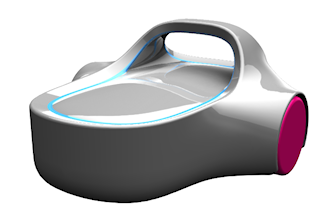
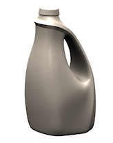
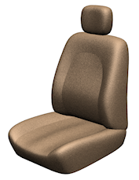
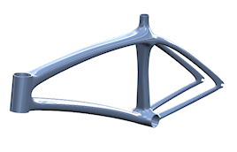
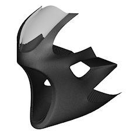
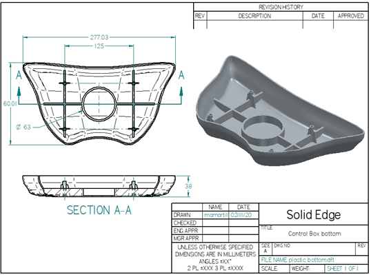
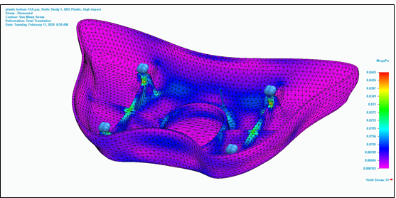

Introduction to Subdivision Modeling
Subdivision Modeling is a task environment in which you can create free-form spline shapes, either solid or sheet bodies, by manipulating and subdividing a control cage of an initial primitive shape, such as a block, cylinder, sphere, or torus.
Use Subdivision Modeling to create products requiring organic or aesthetically pleasing shapes.
|
Consumer products |
 |
 |
|
Automotive |
 |
|
|
Recreational |
 |
 |
You can also use it to create tools to modify solid or sheet bodies created with more standard modeling methods.
Benefits of Subdivision Modeling
-
Expands the shape and surfacing capabilities of Solid Edge by letting you create shapes not easily modeled with traditional methods. Traditional feature and surface commands are used in conjunction with Subdivision Modeling to refine the shape and add detail.
-
Complex shapes are created and edited more quickly, which promotes early conceptualization of a design.
-
The simple interaction of Subdivision Modeling commands avoids needing to use complex tools to develop simple base shapes.
Drawings and downstream applications of subdivision models
Subdivision bodies are created using spline surface patches, so they can be placed in drawings, with some limitations.

Resulting bodies are available for downstream applications that support spline faces and bodies.

How do I
Subdivision Modeling workflowMove cage elements
Move using Quick Move
Use symmetric mode in Subdivision Modeling
Scale a subdivision model
Split subdivision model faces
Split faces with offset
Offset cage faces
Connect cage faces or edges with a bridge
Delete and fill cage faces
Align a shape to a curve
Learn more
Using PathFinder with subdivision modelsWorking with cage elements
Creating subdivision features
Working with subdivision features
Moving and rotating cage elements
Look up more details
Subdivision Modeling commandBox command in Subdivision Modeling
Box command bar
Cylinder command in Subdivision Modeling
Cylinder command bar
Sphere command in Subdivision Modeling
Sphere command bar
Torus command
Torus command bar
Scale command in Subdivision Modeling
Blend command
Show Blend Values command
Split command
Split with Offset command
Bridge command
Align to Curve command
Cage Style command